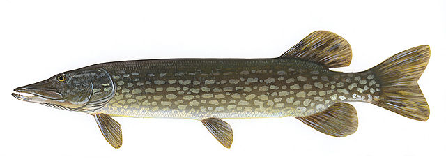

Mitä tarvitsen pilkintään?
Tarvitset näitä kun menet kalaan:
- Naskalit
- Jäällä kulkijan paras turva!
- Kaira
- Pidä teräsuojus aina paikallaan kuljettaessasi kairaa.
- Pilkkivapa
- Ota mukaasi myös uistin. Pystypilkkiuistin on paras vaihtoehto aloittelijalle.
- Lämpimät vaatteet
Voit ottaa mukaasi myös jakkaran ja kuumaa juomaa!
Miten pilkin?
Pilkkiminen on helppoa.
Tarkista ensin jään syvyys kairaamalla reikä jäähän ja tarkista jään paksuus - 7cm teräsjäätä kantaa ihmisen turvallisesti.
Siirrä kaira syrjään. Kairaa työkalu osittain jäähän, jotta se pysyy pystyssä, eikä sen terät aiheuta vaaraa itsellesi tai muille.
Vapauta vavan kela ja anna uistimen vajota pohjaan.
Kun uistin on pohjassa, kelaa sitä noin 50cm ylös ja lukitse kela.
Vedä uistinta ripeästi ylös ja anna sen vajota jälleen kerran. Tarkoituksena on houkutella kaloja apajille.
Jatka pienemmillä nykymisliikkeillä.
Liian isot eleet voivat säikäyttää syövät kalat pois.
Kun tunnet kalan syövän, vedä saalis pikaisesti ylös suoraan siimasta vetämällä.
Millaista kalaa voin saada pilkkimällä?
Yleisimmät pilkkikalat ovat:
